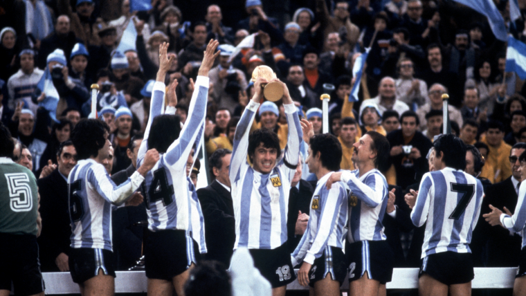

Argentina en los mundiales
Argentina es una de apenas seis selecciones en haber conseguido al menos dos títulos Mundiales a lo largo de su historia y luego de quedarse con la última edición de la Copa América, sueña con sumar su tercer trofeo mundialista en Qatar 2022. Con Qatar, Argentina participó de 18 Mundiales a lo largo de su historia, incluyendo presencias consecutivas sin interrupción a partir de Alemania 1974. En su historial aparecen dos títulos (1978 y 1986), tres finales perdidas (1930, 1990 y 2014) y cuatro torneos sin presencia (1938, 1950, 1954 y 1970). La primera consagración llegó como local, en 1978, al vencer en la final a Países Bajos por 3-1 en tiempo extra, luego de haber empatado 1-1 en los 90 minutos. Mario Kempes -en dos ocasiones- y Daniel Bertoni marcaron los tantos para llegar a la corona. Previamente, los dirigidos por César Luis Menotti habían vencido a Hungría por 2-1 en el debut, a Francia por otro 2-1 en la segunda presentación, perdido con Italia por 1-0, vencido a Polonia por 2-0, empatado con Brasil por 0-0 y goleado a Perú en un polémico partido por 6-0, para asegurar la clasificación a la final. Ocho años más tarde llegó el segundo título, en México 1986. Los dirigidos por Carlos Salvador Bilardo abrieron el torneo con una buena fase de grupos, en la que vencieron a Corea del Sur por 3-1, empataron 1-1 con Italia y derrotaron a Bulgaria por 2-0. En octavos, Argentina derrotó 1-0 a Uruguay, mientras que en cuartos apareció el que probablemente sea el partido más emblemático de la historia de los Mundiales: el 2-1 a Inglaterra, con la Mano de Dios y el mejor gol de todos los tiempos por parte de Diego Maradona. Luego, un 2-0 en semis sobre Bélgica con doblete de Diego y un sufrido 3-2 sobre Alemania Federal en la final, con goles del Tata Brown, Jorge Valdano y Jorge Burruchaga. ¿Las finales perdidas? Dos fueron justamente ante Alemania: un 1-0 en Italia 1990 y otro 1-0 (en tiempo extra) en Brasil 2014. La restante fue en el primer Mundial disputado, Uruguay 1930, cuando la Albiceleste cayó ante los locales por 4-2. La peor ubicación histórica fue el 18° puesto en Corea-Japón 2002, donde aquel seleccionado comandado por Marcelo Bielsa no pudo pasar la fase de grupos luego de vencer a Nigeria, perder con Inglaterra y empatar ante Suecia en el partido decisivo.
Copyright Scaloneta 2022